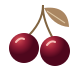

A ESCOLHA CHERRY
Hobo Dourada
Alça de mão · detalhes dourados

CherryB O L S A SArraste a bolsa para mover. Use as setas esquerda e direita para trocar a bolsa e as setas para cima e para baixo para inclinar.
Curvas, brilho ou textura?
Descubra qual Cherry tem o seu jeito.
Alça de mão · detalhes dourados
Alça de mão e ombro · pingente de cerejas
Bolsa de ombro · detalhes prateados
Bolsa de ombro · fivelas e tachas
Bolsa de mão · textura trançada
Nenhuma bolsa por aqui ainda.
Explore os modelos e salve suas favoritas no coração.Consulte valores, medidas e disponibilidade pelo Instagram.
Um detalhe em vinho, cheio de personalidade.
Uma bolsa que faz ser Cherry.
Fivelas e acabamentos em tom prateado.
Silhueta curva, alça de ombro e tom vinho.
Abra “Ver detalhes” no modelo que gostou e selecione “Consultar no Instagram”. Você será direcionada ao perfil da Cherry para falar sobre a sua escolha.
Valores, medidas, cores e disponibilidade são confirmados diretamente com a Cherry pelo Instagram, antes de qualquer pedido.
Sim. Toque no coração de uma bolsa e depois no coração do menu para ver sua seleção. As favoritas ficam salvas neste navegador.